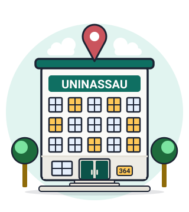

Liga acadêmica
Somos a LAIFT, a Liga Acadêmica Interdisciplinar de Farmacologia e Toxicologia.
Nada se cria, nada se perde, tudo se transforma
conteúdo científico • projetos • capacitações
Inscrições fechadas no momento. Acompanhe @laift.liga.

Uma liga acadêmica que une estudantes da saúde para aprender, pesquisar e levar a ciência adiante.
Somos a LAIFT, a Liga Acadêmica Interdisciplinar de Farmacologia e Toxicologia.
Reunimos estudantes em atividades para o desenvolvimento técnico-científico das ciências farmacológicas.
Excelência acadêmica, interdisciplinaridade e proatividade.
Com compromisso ético, análise baseada em evidências e respeito aos cronogramas.
Farmácia, Biomedicina, Medicina, Nutrição, Enfermagem e outros cursos da saúde aprendem juntos.
Quiz, casos clínicos, laboratório virtual e atlas 3D para estudar no seu ritmo.
UNINASSAU, Centro Universitário Maurício de Nassau, em Salvador, Bahia.
Ver no mapaTemas em que a Liga atua e que você pode escolher ao se inscrever.
Fazer parte da LAIFT é um compromisso. Em troca, você ganha experiência, conexões e novas formas de aprender.
Carga horária semanal mínima: a divulgar.
Três etapas, com instruções, datas e edital na página do processo.

Regras, etapas, avaliação, compromissos e privacidade em um só documento.
Abrir o editalFale com a Liga pelos canais oficiais.
A LAIFT atua na UNINASSAU, em Salvador, Bahia.

UNINASSAU
Rua Direita da Piedade, 358
Salvador, Bahia
CEP 40070-190
www.uninassau.edu.br (abre em nova aba)
Abrir no app de mapasO mapa interativo é do OpenStreetMap e só carrega quando você pedir. Ao carregar, o OpenStreetMap recebe o endereço IP do seu aparelho.
Notícias da Liga, guias dos módulos e publicações.
Ir para o blog